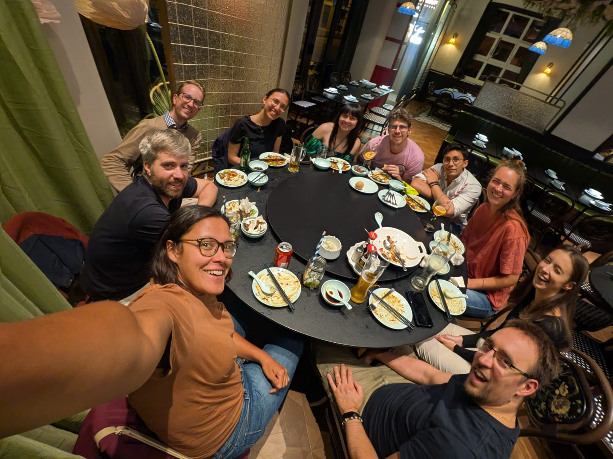

Gabriele Franch
The community gives us a common language for turning local radar archives into reusable training data.
Organisation
FBK
Trento, Italy
Building open weather nowcasting together.
MLCast is a community of researchers, meteorologists, software engineers, students, and public-data stewards working on practical machine-learning tools for short-term precipitation forecasting.
MLCast started as a handful of researchers comparing notes on nowcasting models and grew into an open, cross-institution community. Here's who we are, what we build together, and why it matters.
An open network of researchers, meteorologists, software engineers, students, and public-data stewards spanning national weather services and universities across Europe. No membership fees, no gatekeeping — anyone working on open precipitation nowcasting is welcome.

We build shared datasets, validation tools, model code, and worked examples that let teams train and benchmark short-term precipitation forecasts on common ground. We meet at conferences, trade fixes on Slack, and keep the tooling open so results stay reproducible.

Accurate nowcasts give people more lead time before storms and floods. Open, verifiable tools let any group — not just those with big budgets — reproduce results, build on each other's work, and turn research into forecasts that protect communities.

Gabriele Franch
The community gives us a common language for turning local radar archives into reusable training data.
FBK
Trento, Italy

Leif Denby
I bring experience in operational meteorology and a practical perspective on what forecasters actually need from machine-learning tools.
University of Leeds
Leeds, UK
DMI
Copenhagen, Denmark
Irene Livia Kruse
Working at the intersection of data engineering and atmospheric science, I help turn raw radar data into clean, well-documented datasets.
DMI
Copenhagen, Denmark